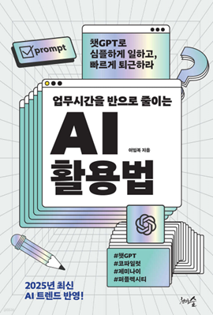

학습 목표
- 1. 생성형 AI의 기본 개념과 원리를 이해하고, 이를 실제 업무에 적용할 수 있다.
- 2. 생성형 AI를 활용한 창의적 문제 해결 방법을 학습하여, 업무 효율성을 극대화할 수 있다.
교육 특징
-
1. AI 전문가가 전하는 최신 AI 기술의 실전 중심 학습
4차 산업혁명의 핵심 기술인 생성형 AI와 노코드 도구, ChatGPT, 코파일럿 등 최신 AI 기술을 집약하여 이론보다는 실제 사례 중심으로 강의를 통한 실무 적용력 상승
-
2. 실제 화면 데모로 느끼는 노코드 AI 혁신
최신 AI 관련 시각화 자료와 도구 사용법을 통해 구체적인 내용을 시각적으로 제시하여 이해도 향상
-
3. 생성형 AI를 업무에 활용하기 위해서 배워야 하는 필수 학습 내용
핵심 위주로 정리된 이론 및 누구나 이해하기 쉽게 구성된 활용법을 통해 생성형 AI 활용을 위한 기본 개념 및 실전 활용 방법 습득
교육 대상
- 1. 최신 AI 기술과 노코드 도구, 이미지 및 영상 제작 등 다양한 AI 활용 분야에 관심이 있는 모든 직장인 및 일반인
강의 목차
- 제1장 변화하는 세상 : 생성형 AI의 이해
- 제2장 ChatGPT 시작 및 프롬프트엔지니어링
- 제3장 AI 노코드 툴을 이용한 앱 활용 1
- 제4장 AI 노코드 툴을 이용한 앱 활용 2
- 제5장 코파일럿을 활용한 업무효율화
- 제6장 ChatGPT 200% 활용 확장프로그램
- 제7장 이미지와 영상, 디자인 작업에 활용하는 AI
강사 소개
강사명
정보근
경력
정보근앤컴퍼니 대표
컴퓨터 공학박사
강릉원주대학교 객원교수
저서 ‘공학박사가 알려주는 ChatGPT 메뉴얼북’, ‘미래인재 기업가정신에 답이 있다’
컴퓨터 공학박사
강릉원주대학교 객원교수
저서 ‘공학박사가 알려주는 ChatGPT 메뉴얼북’, ‘미래인재 기업가정신에 답이 있다’
참고 도서

도서명
업무시간을 반으로 줄이는 AI 활용법
저자명
이임복
도서소개
'Text-to-X' 시대가 도래하며 생성형 AI는 창의력과 생산성을 폭발적으로 확장시켜 '검색의
시대'를 끝내고 '질문의 시대'를 열었습니다. 이제 AI는 선택이 아닌 필수이며, 개인의 변화가 조직의 변화를 이끌 핵심입니다. AI를 활용하여 업무
효율을 극대화하고 삶의 질을 높이는 꿈을 현실로 만들 수 있으며, 지금 바로 AI에게 끊임없이 질문하고 도전해야 합니다.